|
LAS HORTALIZAS EN LA ALIMENTACI�N DE LAS TORTUGAS TERRESTRES. LAS
"VERDURAS DE SUPERMERCADO"
A�da Rodr�guez, 2006
No
cabe duda de que la mejor alimentaci�n para las tortugas es aquella
que tienen en libertad y que cuando las mantenemos en cautividad,
debemos procurarles una dieta a base de plantas silvestres lo m�s
semejante posible a la que habitualmente ingieren. Sin embargo, habr�
ocasiones en que nos sea temporalmente imposible hacerlo, como en los
meses de m�s calor o cuando tenemos que dejar a nuestras tortugas al
cuidado de otra persona. En esos momentos podemos echar mano de las
hortalizas que encontramos en cualquier mercado o tienda de
autoservicio, que recientemente est�n siendo llamadas de manera
coloquial �verduras de supermercado�. Tambi�n podemos utilizarlas para
agregar variedad a una dieta a base de plantas silvestres.
Para
seleccionar las verduras que vamos a proporcionar, debemos tener en
cuenta los requerimientos diet�ticos generales de las tortugas que, de
acuerdo a diversos autores, son:
-Alta
en fibra
-Alta
en Calcio (Ca)
-Baja
en F�sforo (P)
-Relaci�n Ca:P de 3-5:1
-Baja
en prote�nas
-Baja
en elementos nocivos y antinutrientes (insecticidas, oxalatos,
glucosinolatos, nitratos, etc)
-Baja
en grasa
-Baja
en almidones
Una
tortuga disfruta de una hoja de endibia.
Adem�s
de cumplir estos requisitos, conviene proporcionar la mayor variedad
posible para asegurar un aporte de vitaminas y otros minerales
indispensables para lograr un buen desarrollo, y recordar siempre
suplementar la dieta con carbonato o gluconato de calcio una o dos
veces por semana y un multivitam�nico de calidad para consumo humano
una o dos veces por mes.
En
general, las hortalizas contienen cantidades insuficientes de fibra
diet�tica para llenar las necesidades de las tortugas terrestres, por
lo que es recomendable espolvorear hierbas comestibles secas molidas
sobre el alimento como c�sped, diente de le�n, flores de Hibiscus
(obelisco o pac�fico), nopal (palas de chumbera), etc., las cuales
pueden conseguirse f�cilmente en hierber�as (herborister�as)
A
continuaci�n se describen brevemente las caracter�sticas y los valores
nutricionales de algunos de los vegetales m�s com�nmente accesibles.
Todos los valores nutricionales mencionados son para 100 gramos del
producto fresco y crudo. Cabe aclarar que los valores pueden variar
ligeramente dependiendo de las condiciones del medio de cultivo, �poca
del a�o, madurez de la planta, etc., pero en general mantienen
proporciones similares a las se�aladas.
Precaucion: Toda la informaci�n expresada en este trabajo es en
relaci�n a las partes habitualmente comestibles se�aladas de las
plantas mencionadas. Otras partes de la planta podr�an no ser
adecuadas para el consumo e incluso resultar t�xicas.
Los
m�s adecuados
Una de
las mejores verduras que podemos conseguir en el s�per es la
escarola (Cichorium endivia L.). Tiene una buena relaci�n
Ca:P de 1.8:1, suficiente fibra y pocas prote�nas. Su alta proporci�n
de l�quidos la hacen muy favorable para los meses de calor.
|
|
COMPOSICI�N |
VITAMINAS |
MINERALES |
|
Escarola
(Cichorium endivia L.)
Hojas
(100g) |
Calor�as 17
Agua 93.8g
Cenizas 1.4g
Grasas 0.2g
Carbohidratos totales 3.3g
Fibra 3.1g
Az�cares 0.3g
Prote�nas 1.3g
Relaci�n Ca:P 1.8:1
�c. Ox�lico 0.11g |
Vitamina A 2167 UI
Vitamina C 6.5mg
Vitamina E 0.4mg
Tiamina (B 1) 0.1mg
Riboflavina (B 2) 0.1mg
Niacina 0.4mg
Piridoxina (B 6) 0mg
Folatos 142mcg
�c. Pantot�nico (B5) 0.9mg
Vitamina K 231mcg |
Calcio 52mg
F�sforo 28mg
Hierro 0.8mg
Magnesio 15mg
Potasio 314mg
Sodio 22mg
Zinc 0.8mg
Cobre 0.1mg
Manganeso 0.4mg
Yoduro 2.9mcg
Selenio 0.2mcg
Nitratos 106mg |
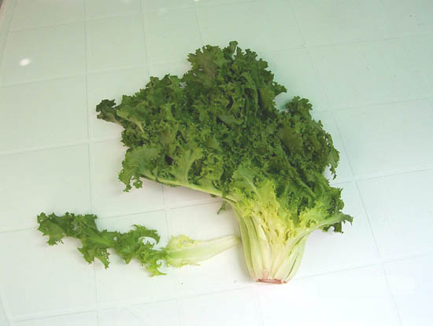
Escarola
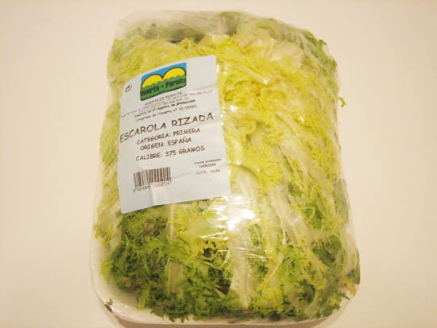
Escarola envasada
(Foto: Mar�a Jos� Navarro)
Los
berros (Nasturtium officinale)
son otra buena opci�n. Tienen una relaci�n Ca:P de 2, adecuada
cantidad de fibra y buena provisi�n de vitaminas y minerales. Al igual
que con las dem�s verduras �de hoja�, es necesario lavarlos bien al
chorro del agua.
|
|
COMPOSICI�N |
VITAMINAS |
MINERALES |
|
Berros
Nasturtium officinale
Hojas y tallos
(100 g) |
Calor�as 11
Agua 95.1g
Ceniza 1.2g
Grasa 0.1g
Carbohidratos totales 1.3g
Fibra 0.5g
Az�cares 0.2g
Prote�nas 2.3g
Relaci�n Ca:P 2:1
�c. Ox�lico 0.31g |
Vitamina A 4700 UI
Vitamina C 43mg
Vitamina E 1mg
Tiamina (B 1) 0.1mg
Riboflavina (B 2) 0.1mg
Niacina 0.2mg
Piridoxina (B 6) 0.1mg
Folatos 9mcg
�c. Pantot�nico (B5)
0.3mg
Vitamina K 250mcg |
Calcio 120mg
F�sforo 60mg
Hierro 0.2mg
Magnesio 21mg
Potasio 330mg
Sodio 41mg
Zinc 0.1mg
Cobre 0.1mg
Manganeso 0.2mg
Selenio 0.9mcg
Nitratos 62-242mg |
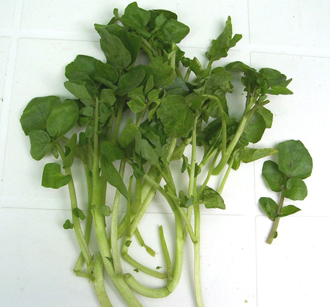
Berros
En
algunos mercados y supermercados pueden conseguirse las hojas del
nabo (Brassica rapa L. var. rapa), que constituyen
un alimento nutritivo. Resultan sobre todo una buena opci�n cuando se
necesitan en cantidades elevadas para las tortugas voluminosas
(adultos de sulcatas, pardalis, giganteas, etc) o grandes colecciones.
Por ser una cruc�fera, contiene glucosinolatos (aunque en menor
cantidad que otras plantas de la misma familia) que a la larga podr�an
alterar la funci�n tiroidea, por lo que no deben consumirse a diario
ni en grandes cantidades.
|
|
COMPOSICI�N |
VITAMINAS |
MINERALES |
|
Hojas
de Nabo
Brassica rapa
(100 g) |
Calor�as 32
Agua 89.7g
Ceniza 1.4g
Grasa 0.3g
Carbohidratos totales 7.1g
Fibra 3.2g
Az�cares 0.8g
Prote�nas 1.5g
Relaci�n Ca:P 4.5:1
Glucosinolatos
�c. Ox�lico 0.05g |
Vitamina A 11590 UI
Vitamina C 60mg
Vitamina E 2.9mg
Tiamina (B 1) 0.1mg
Riboflavina (B 2) 0.1mg
Niacina 0.6mg
Piridoxina (B 6) 0.3mg
Folatos 194mcg
�c. Pantot�nico (B5)
0.4mg
Vitamina K 251mcg |
Calcio 190mg
F�sforo 42mg
Hierro 1.1mg
Magnesio 31mg
Potasio 296mg
Sodio 40mg
Zinc 0.2mg
Cobre 0.4mg
Manganeso 0.5mg
Selenio 1.2mcg |
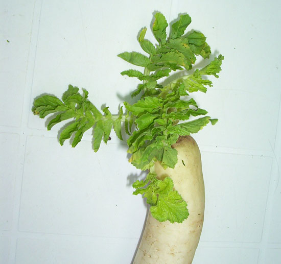
Hojas de Nabo.
Otra variedad de nabo
(Foto:
Alfredo Fillol)
Los
no tan adecuados
Los
habitantes del continente americano pueden encontrar f�cilmente en
mercados y tiendas de autoservicio los nopales tiernos (Opuntia
ficus indica) es decir, las palas tiernas de chumbera que
se consiguen de manera silvestre en algunos lugares de Espa�a. �stos
tienen una muy buena relaci�n Ca:P de 10:1, suficiente fibra y
escasas prote�nas. Al igual que algunas otras suculentas su consumo en
exceso puede favorecer la aparici�n de heces blandas debido
probablemente a un alto contenido de �cido ox�lico (Nefzaoui y Ben
Salem 2001). Estudios recientes revelan que el calcio contenido en los
nopales o palas se encuentra principalmente en forma de oxalato de
calcio, lo que reducir�a notablemente su biodisponibilidad y absorci�n
(Mcconn y Nakata, 2004). Siempre deben utilizarse palas tiernas ya que
su contenido de �cido ox�lico aumenta con la madurez.
|
|
COMPOSICI�N |
VITAMINAS |
MINERALES |
|
Nopales o
palas de
chumbera
Opuntia ficus indica
(100 g) |
Calor�as 16
Agua 94.1g
Ceniza 1.1g
Grasa 0.1g
Carbohidratos totales 3.3g
Fibra 2.2g
Az�cares 1.2g
Prote�nas 1.3g
Relaci�n Ca:P 10:1
�c. Ox�lico 0.8g |
Vitamina A 457 UI
Vitamina C 9.3mg
Vitamina E 0.0mg
Tiamina (B 1) 0.0mg
Riboflavina (B 2) 0.0mg
Niacina 0.4mg
Piridoxina (B 6) 0.1mg
Folatos 3mcg
�c. Pantot�nico (B5)
0.2mg
Vitamina K 5.3mcg |
Calcio 164mg
F�sforo 16mg
Hierro 0.6mg
Magnesio 52mg
Potasio 257mg
Sodio 21mg
Zinc 0.3mg
Cobre 0.1mg
Manganeso 0.5mg
Selenio 0.7mcg |
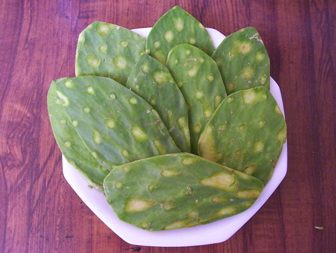
Nopales o Palas de Chumbera tiernas.
La
endibia (Cichorium intybus L.) y el radicchio o
achicoria roja (C. intybus var. Foliosum),
pertenecientes a la familia de la achicoria, tienen una relaci�n de
nutrientes menos adecuada que la escarola. Su contenido de vitaminas
es escaso en general, y tienen una relaci�n Ca:P negativa. Sin
embargo, el radicchio es una de las mejores fuentes de vitamina E,
junto con las hojas de nabo.
|
|
COMPOSICI�N |
VITAMINAS |
MINERALES |
|
Endibia
Cichorium intybus
Hojas
(100 g) |
Calor�as 17
Agua 94.5g
Ceniza 0.5g
Grasa 0.1g
Carbohidratos totales 4g
Fibra 3.1g
Az�cares n.d.
Prote�nas 0.9g
Relaci�n Ca:P 0.73:1
�c. Ox�lico 0.02g |
Vitamina A 29UI
Vitamina C 2.8mg
Vitamina E n.d.
Tiamina (B 1) 0.1mg
Riboflavina (B 2) 0.0mg
Niacina 0.2mg
Piridoxina (B 6) 0.0mg
Folatos 37mcg
�c. Pantot�nico (B5) 0.1mg
Vitamina K n.d. |
Calcio 19mg
F�sforo 26mg
Hierro 0.2mg
Magnesio 10mg
Potasio 211mg
Sodio 2mg
Zinc 0.2mg
Cobre 0.1mg
Manganeso 0.1mg
Selenio 0.2mcg
Nitratos 15mg |
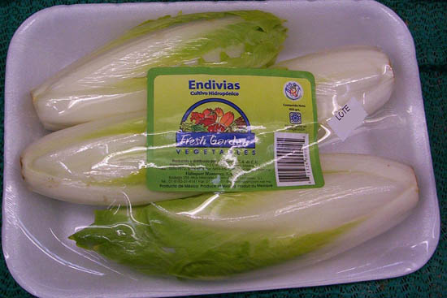
Endibias.
|
|
COMPOSICI�N |
VITAMINAS |
MINERALES |
|
Radicchio o
achicoria roja
Cichorium intybus var. Foliosum
Hojas
(100g) |
Calor�as 23
Agua 93.2g
Cenizas 0.7g
Grasas 0.3g
Carbohidratos totales 4.5g
Fibra 0.9g
Az�cares 0.6g
Prote�nas 1.4g
Relaci�n Ca:P 0.5:1 |
Vitamina A 27 UI
Vitamina C 8mg
Vitamina E 2.3mg
Tiamina (B 1) 0.0mg
Riboflavina (B 2) 0.0mg
Niacina 0.3mg
Piridoxina (B 6) 0.1mg
Folatos 60mcg
�c. Pantot�nico (B5) 0.3mg
Vitamina K 255mcg |
Calcio 19mg
F�sforo 40mg
Hierro 0.6
mg
Magnesio 13mg
Potasio 302mg
Sodio 22mg
Zinc 0.8mg
Cobre 0.3mg
Manganeso 0.1mg
Selenio 0.9mcg |
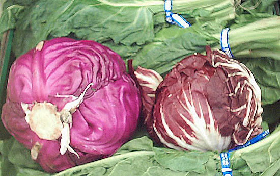
Col
Lombarda (izquierda) y Radicchio (derecha).
La
lechuga (Lactuca sativa) ha recibido muy mala publicidad
como alimento para tortugas. Sin embargo s� puede ser utilizada en
cantidades moderadas, sobre todo cuando se trata de aumentar la
hidrataci�n o inducir a comer a una tortuga inapetente, ya que suele
gustarles mucho. Es mejor usar las hojas externas, m�s verdes y
fibrosas. Hay que escoger siempre las variedades de hojas oscuras,
como la romana (conocida en M�xico como �orejona�) y roble o italiana,
que tienen una relaci�n Ca:P de 1.1:1 y un mejor valor nutricional
general que las variedades de hojas p�lidas como la iceberg
(romanita), con una relaci�n Ca:P negativa. Recordar suplementarla
siempre con calcio.
|
|
COMPOSICI�N |
VITAMINAS |
MINERALES |
|
Lechuga
romana
(orejona)
Hojas
(100 g) |
Calor�as 17
Agua 94.6g
Ceniza 0.7g
Grasa 0.357g
Carbohidratos totales 3.2g
Fibra 2.14g
Az�cares 1.07g
Prote�nas 1g
Relaci�n Ca:P 1.1:1
�c. Ox�lico 0.33g |
Vitamina A 5804 UI
Vitamina C 24mg
Vitamina E 0.357mg
Tiamina (B 1) 0.0mg
Riboflavina (B 2) 0.0mg
Niacina 0.35mg
Piridoxina (B 6) 0.0mg
Folatos 136mcg
�c. Pantot�nico (B5)
0.0mg
Vitamina K 102mcg |
Calcio 33mg
F�sforo 30mg
Hierro 1mg
Magnesio 14mg
Potasio 247mg
Sodio 8mg
Zinc 0.35mg
Cobre 0.0mg
Manganeso 0.0,g
Yoduro 1.8mcg
Selenio 0.36mcg
Nitratos 219mg |
|
|
COMPOSICI�N |
VITAMINAS |
MINERALES |
|
Lechuga
iceberg
(romanita)
Hojas
(100 g) |
Calor�as 14
Agua 95.6g
Ceniza 0.4g
Grasa 0.1g
Carbohidratos totales 3g
Fibra 1.2g
Az�cares 1.8g
Prote�nas 0.9g
Relaci�n Ca:P 0.9:1
�c. Ox�lico 0.33g |
Vitamina A 502 UI
Vitamina C 2.8mg
Vitamina E 0.2mg
Tiamina (B 1) 0.0mg
Riboflavina (B 2) 0.0mg
Niacina 0.1mg
Piridoxina (B 6) 0.0mg
Folatos 29mcg
�c Pantot�nico (B5)
0.1mg
Vitamina K 24mcg |
Calcio 18mg
F�sforo 20mg
Hierro 0.4mg
Magnesio 7mg
Potasio 141mg
Sodio 10mg
Zinc 0.2mg
Cobre 0.0mg
Manganeso 0.1mg
Selenio 0.1mcg
Nitratos 52-102mg |
|
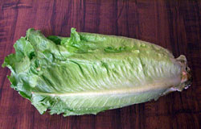
Lechuga Romana, conocida tambi�n como "Orejona" o "Cos". |
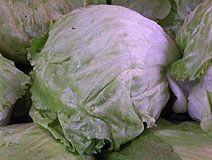
Lechuga Iceberg. Contiene muy pocos nutrientes. |
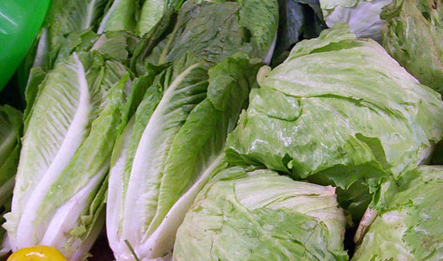
Lechugas Romana (izquierda) e Iceberg (derecha).
Lechugas Italiana y Sangr�a o "Lollo" verde y rosso. Su contenido
nutricional es semejante al de la lechuga romana.
Los
vegetales de la familia de las cruc�feras, como la col blanca y
morada o lombarda (Brassica oleracea L. var. Capitata y
subvar. Rubra) colecitas de Bruselas (Brassica oleracea
var. gemmifera)), el br�coli
(Brassica oleracea L. var. Italica), la coliflor (Brassica
oleracea L. var. botrytis),
bock choy, etc., a pesar de tener algunos una relaci�n Ca:P buena y
buen valor nutricional en cuanto a vitaminas y minerales, tienen la
desventaja de contener sustancias que producen grandes cantidades de
gases intestinales pero, sobre todo, contienen glucosinolatos y
amino�cidos t�xicos que podr�an afectar la salud de las tortugas. Una
cantidad peque�a de vez en cuando, sin embargo, ayuda a mantener la
variedad en la dieta y las tortugas disfrutan de una golosina.
Los
glucosinolatos o tiogluc�sidos son un grupo de compuestos
nitrogenados cuyos productos de degradaci�n son potencialmente
t�xicos. En el ganado producen gastroenteritis aguda, salivaci�n y
disminuyen los niveles de glutati�n (un protector celular
antioxidante) (Ramos et all. 1998). En humanos podr�an favorecer la
aparici�n de neuropat�as (Hernandez. 1995) y son conocidos por su
capacidad de alterar la funci�n tiroidea pudiendo ocasionar bocio. Sin
embargo, tambi�n se les han encontrado algunas propiedades
anticancer�genas, en especial en la prevenci�n del c�ncer de mama,
colon y pulm�n. (Keck
and Finley, 2004).
|
|
COMPOSICI�N |
VITAMINAS |
MINERALES |
|
Col blanca
Brassica oleracea var. Capitata
Hojas
(100 g) |
Calor�as 24
Agua 92.1g
Ceniza 0.7g
Grasa 0.1g
Carbohidratos totales 5.6g
Fibra 2.3g
Az�cares 3.6g
Prote�nas 1.4g
Relaci�n Ca:P 2:1
Glucosinolatos
�c. Ox�lico 0.10g |
Vitamina A 171 UI
Vitamina C 32mg
Vitamina E 0.2mg
Tiamina (B 1) 0.1mg
Riboflavina (B 2) 0.0mg
Niacina 0.3mg
Piridoxina (B 6) 0.1mg
Folatos 43mcg
�c Pantot�nico (B5)
0.1mg
Vitamina K 60mcg |
Calcio 47mg
F�sforo 23mg
Hierro 0.6mg
Magnesio 15mg
Potasio 246mg
Sodio 18mg
Zinc 0.2mg
Cobre 0.0mg
Manganeso 0.2mg
Ioduro 3.0mcg
Selenio 0.9mcg
Fluoruro 1mcg
Nitratos 40mg |
|
|
COMPOSICI�N |
VITAMINAS |
MINERALES |
|
Col morada o lombarda
Brassica oleracea L. var. Capitata subvar. Rubra
Hojas
(100 g) |
Calor�as 31
Agua 90.4g
Ceniza 0.6g
Grasa 0.2g
Carbohidratos totales 7.4g
Fibra 2.1g
Az�cares 3.9g
Prote�nas 1.4g
Relaci�n Ca:P 1.5:1
Glucosinolatos
�c. Ox�lico 0.10g |
Vitamina A 1116 UI
Vitamina C 57mg
Vitamina E 0.1mg
Tiamina (B 1) 0.1mg
Riboflavina (B 2) 0.1mg
Niacina 0.4mg
Piridoxina (B 6) 0.2mg
Folatos 18mcg
�c Pantot�nico (B5)
0.1mg
Vitamina K 38.2mcg |
Calcio 45mg
F�sforo 30mg
Hierro 0.8mg
Magnesio 16mg
Potasio 243mg
Sodio 27mg
Zinc 0.2mg
Cobre 0.0mg
Manganeso 0.2mg
Ioduro 2.9mcg
Selenio 0.6mcg
Nitratos 28mg |
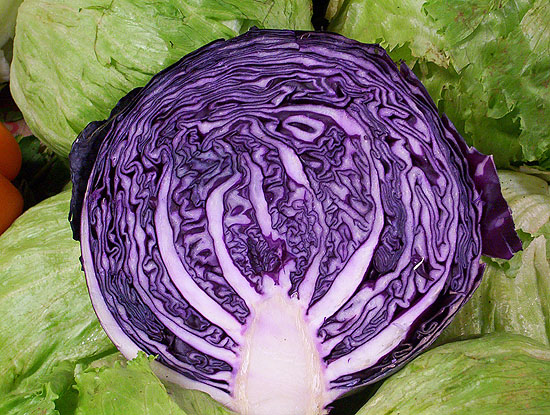
Col
Lombarda o morada.
|
|
COMPOSICI�N |
VITAMINAS |
MINERALES |
|
Hojas de
Br�coli
Brassica oleracea L. var.
It�lica
(100 g) |
Calor�as 28
Agua 90.7g
Ceniza 0.9g
Grasa 0.4g
Carbohidratos totales 5.2g
Fibra nd
Az�cares nd
Prote�nas 3g
Relaci�n Ca:P 0.72:1
Glucosinolatos |
Vitamina A 16000UI
Vitamina C 93.2
Vitamina E nd
Tiamina (B 1) 0.1 mg
Riboflavina (B 2) 0.1mg
Niacina 0.6mg
Piridoxina (B 6) 0.2mg
Folatos 71mcg
�c. Pantot�nico (B5)
0.5mg
Vitamina K nd |
Calcio 48mg
F�sforo 66mg
Hierro 0.9mg
Magnesio 25mg
Potasio 325mg
Sodio 27mg
Zinc 0.4mg
Cobre 0.0mg
Manganeso 0.2mg
Selenio 3mcg
|
|
Flores de Br�coli
(100 g) |
Calor�as 28
Agua 90.7g
Ceniza 0.9g
Grasa 0.4g
Carbohidratos totales 5.2g
Fibra nd
Az�cares nd
Prote�nas 3g
Relaci�n Ca:P 0.72:1
Glucosinolatos
�c. Ox�lico 0.19g |
Vitamina A 3000 UI
Vitamina C 93mg
Vitamina E nd
Tiamina (B 1) 0.1mg
Riboflavina (B 2) 0.1mg
Niacina 0.6mg
Piridoxina (B 6) 0.2mg
Folatos 71mcg
�c. Pantot�nico (B5)
0.5mg
Vitamina K nd |
Calcio 48mg
F�sforo 66mg
Hierro 0.9mg
Magnesio 25mg
Potasio 325mg
Sodio 27mg
Zinc 0.4mg
Cobre 0.0mg
Manganeso 0.2mg
Yoduro 15mcg
Selenio 3mcg
Nitratos 71mg |
|
|
COMPOSICI�N |
VITAMINAS |
MINERALES |
|
Coliflor
Brassica oleracea var botrytis
Flores
(100 g) |
Calor�as 25
Agua 91.9g
Ceniza 1.7g
Grasa 0.1g
Carbohidratos totales 5.3g
Fibra 2.5g
Az�cares 2.4g
Prote�nas 2g
Relaci�n Ca:P
Glucosinolatos
�c. Ox�lico 0.15 g |
Vitamina A 13UI
Vitamina C 46.4mg
Vitamina E 0.1mg
Tiamina (B 1) 0.1mg
Riboflavina (B 2) 0.1mg
Niacina 0.5mg
Piridoxina (B 6) 0.2mg
Folatos 57mcg
�c Pantot�nico (B5) 0.7mg
Vitamina K 16mcg |
Calcio 22mg
F�sforo 44mg
Hierro 0.4mg
Magnesio 15mg
Potasio 303mg
Sodio 30mg
Zinc 0.3mg
Cobre 0.0mg
Manganeso 0.2mg
Yoduro 0.7mcg
Selenio 0.6mcg
Fluoruro 1mcg
Nitratos 42mg |
Coliflor (arriba) y Br�coli (abajo)
Los
prescindibles
Son
vegetales que si bien no son t�xicos, no llenan los requisitos para
constituir una buena dieta para las tortugas. Pueden usarse una o dos
veces por mes, en peque�as cantidades s�lo como complemento de la
dieta o en lugar de golosinas a�n menos adecuadas. Todos tienen una
relaci�n Ca:P negativa, por lo que deben adicionarse con calcio,
adem�s de contener algunos gran cantidad de almid�n (zanahoria
-Daucus carota-), az�cares (tomate o jitomate -Lycopersicon
esculentum-), �cido f�tico que impide la correcta asimilaci�n del
calcio, hierro y otros minerales (jud�as verdes o ejotes -Phaseolus
vulgaris-) o �cido ox�lico
(calabacitas, calabaza �Cucurbita pepo-), etc. Otros
como el pepino ( Cucumis sativus) contienen tan pocos
nutrientes en general que s�lo ocupan espacio en el est�mago causando
sensaci�n de plenitud y evitando que se ingieran alimentos m�s
nutritivos.
|
|
COMPOSICI�N |
VITAMINAS |
MINERALES |
|
Ejotes o
Jud�as
Verdes
Vainas
Phaseolus vulgaris
(100 g) |
Calor�as 31
Agua 90.3g
Ceniza 0.7g
Grasa 0.1g
Carbohidratos totales 7.1g
Fibra 3.4g
Az�cares 1.4g
Prote�nas 1.8g
Relaci�n Ca:P 1:1
Fitatos |
Vitamina A 690 UI
Vitamina C 16.3mg
Vitamina E 0.4mg
Tiamina (B 1) 0.1mg
Riboflavina (B 2) 0.1mg
Niacina 0.8mg
Piridoxina (B 6) 0.1mg
Folatos 37mcg
�c. Pantot�nico (B5)
0.1mg
Vitamina K 14.4mcg |
Calcio 37mg
F�sforo 38mg
Hierro 1mg
Magnesio 25mg
Potasio 209mg
Sodio 6mg
Zinc 0.2mg
Cobre 0.1mg
Manganeso 0.2mg
Yoduro 3mcg
Selenio 0.6mcg
Fluoruro 19mcg
Nitratos 25mg |
|
|
COMPOSICI�N |
VITAMINAS |
MINERALES |
|
Can�nigos
Valerianella locusta
Hojas
(100 g) |
Calor�as 21
Agua 92.8g
Ceniza 1.2g
Grasa 0.4g
Carbohidratos totales 3.6g
Fibra nd
Az�cares nd
Prote�nas 2.0g
Relaci�n Ca:P 0.7:1
|
Vitamina A 7092 UI
Vitamina C 38.2mg
Vitamina E nd
Tiamina (B 1) 0.1mg
Riboflavina (B 2) 0.1mg
Niacina 0.4mg
Piridoxina (B 6) 0.3mg
Folatos 14mcg
�c. Pantot�nico (B5)
0.0mg
Vitamina K nd |
Calcio 38mg
F�sforo 53mg
Hierro 2.2mg
Magnesio 13mg
Potasio 459mg
Sodio 4mg
Zinc 0.6mg
Cobre 0.1mg
Manganeso 0.4mg
Selenio 0.9mcg
Nitratos 219mg |
|
|
COMPOSICI�N |
VITAMINAS |
MINERALES |
|
Jitomate o
Tomate
Rojo
Lycopersicon esculentum
Fruto
(100 g) |
Calor�as 18
Agua 94.5g
Ceniza 0.5g
Grasa 0.2g
Carbohidratos totales 3.9g
Fibra 1.2g
Az�cares 2.6g
Prote�nas 0.9g
Relaci�n Ca:P 0.4:1 |
Vitamina A 833 UI
Vitamina C 12.7mg
Vitamina E 0.5mg
Tiamina (B 1) 0.0mg
Riboflavina (B 2) 0.0mg
Niacina 0.6mg
Piridoxina (B 6) 0.1mg
Folatos 15mcg
�c. Pantot�nico (B5)
0.1mg
Vitamina K 7.9mcg
|
Calcio 10mg
F�sforo 24mg
Hierro 0.3mg
Magnesio 11mg
Potasio 237mg
Sodio 5mg
Zinc 0.2mg
Cobre 0.1mg
Manganeso 0.1mg
Yoduro 1.1mcg
Selenio 0.0mcg
Nitratos 1.1mg
|
|
Ejotes o jud�as verdes. Contienen antinutrientes. |
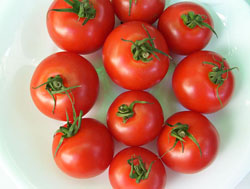
Tomate rojo o jitomate. |
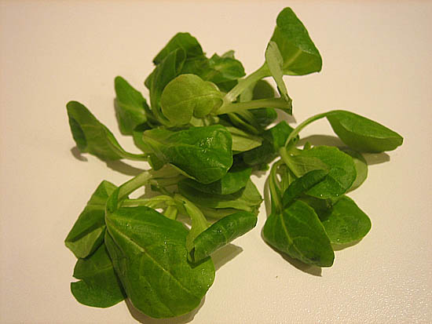
Can�nigos (foto Mar�a Jos� Navarro).
|
COMPOSICI�N |
VITAMINAS |
MINERALES |
|
Pimiento
morr�n
verde
Capsicum annuum var.
Grossum
Fruto
(100 g)
|
Calor�as 20
Agua 93,9g
Ceniza 0.4g
Grasa 0.2g
Carbohidratos totales 4.6g
Fibra 1.7g
Az�cares 2.4g
Prote�nas 0.9g
Relaci�n Ca:P
0.5:1
�c.
Ox�lico 0.04g
|
Vitamina A 370 UI
Vitamina C 80.4mg
Vitamina E 0.4mg
Tiamina (B 1) 0.1mg
Riboflavina (B 2) 0.0mg
Niacina 0.5mg
Piridoxina (B 6) 0.2mg
Folatos 11mcg
�c. Pantot�nico (B5)
0.1mg
Vitamina K 7.4mcg
|
Calcio 10mg
F�sforo 20mg
Hierro 0.3mg
Magnesio 10mg
Potasio 175mg
Sodio 3mg
Zinc 0.1mg
Cobre 0.1mg
Manganeso 0.1mg
Yoduro 1mcg
Selenio 0.0mcg
Fluoruro 2mcg
Nitratos 12mg
|

Pimiento morr�n. Todos los colores tienen un valor nutricional
similar.
|
|
COMPOSICI�N |
VITAMINAS |
MINERALES |
|
Calabacita
O
Calabac�n
Cucurbita pepo
Fruto de 50 dias
(100 g) |
Calor�as 21
Agua 92.7g
Ceniza 1.1g
Grasa 0.4g
Carbohidratos totales 3.2g
Fibra 1.1g
Az�cares N.d.
Prote�nas 2.7g
Relaci�n Ca:P 0.2:1
�c. Ox�lico 0.02g |
Vitamina A 490 UI
Vitamina C 34.1mg
Vitamina E n.d.
Tiamina (B 1) 0.0mg
Riboflavina (B 2) 0.0mg
Niacina 0.7mg
Piridoxina (B 6) 0.1mg
Folatos 20mcg
�c. Pantot�nico (B5)
0.4mg
Vitamina K n.d. |
Calcio 21mg
F�sforo 93mg
Hierro 0.8mg
Magnesio 33mg
Potasio 459mg
Sodio 3mg
Zinc 0.8mg
Cobre 0.1mg
Manganeso 0.2mg
Yoduro 2.3mcg
Selenio 0.3mcg |
|
|
COMPOSICI�N |
VITAMINAS |
MINERALES |
|
Calabaza
Cucurbita pepo
Fruto de 90 d�as
(100 g) |
Calor�as 26
Agua 91.6g
Ceniza 0.8g
Grasa 0.1g
Carbohidratos totales 6.5g
Fibra 0.5g
Az�cares 1.4g
Prote�nas 1g
Relaci�n Ca:P 0.47:1
�c. Ox�lico 0.02g |
Vitamina A 7385UI
Vitamina C 9mg
Vitamina E 1.1mg
Tiamina (B 1) 0.1ng
Riboflavina (B 2) 0.1mg
Niacina 0.6mg
Piridoxina (B 6)
0.1mg
Folatos 16mcg
�c. Pantot�nico (B5) 0.3mg
Vitamina K 1.1mcg |
Calcio 21mg
F�sforo 44mg
Hierro 0.8mg
Magnesio 12mg
Potasio 340mg
Sodio 1mg
Zinc 0.3mg
Cobre 0.1mg
Manganeso 0.1mg
Yoduro 1.4mcg
Selenio 0.3mcg
Nitratos 68mg |
|
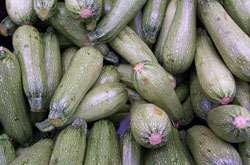
Calabacitas o calabacines |
Calabaza |
|
|
COMPOSICI�N |
VITAMINAS |
MINERALES |
|
Pepino
(Cucumis sativus)
Fruto
(100 g) |
Calor�as 15
Agua 95.2g
Ceniza 0.4g
Grasa 0.1g
Carbohidratos totales 3.6g
Fibra 0.5g
Almid�n 0.8g
Az�cares 1.7g
Prote�nas 0.7g
Relaci�n Ca:P 0.66:1
�c. Ox�lico 0.02g |
Vitamina A 105UI
Vitamina C 2.8mg
Vitamina E 0.0mg
Tiamina (B 1) 0.0mg
Riboflavina (B 2) 0.0mg
Niacina 0.1mg
Piridoxina 0.6mg
Folatos 7.0mcg
�c. Pantot�nico (B5) 0.3mg
Vitamina K 16mcg |
Calcio 16mg
F�sforo 24mg
Hierro 0.3mg
Magnesio 13mg
Potasio 147mg
Sodio 2mg
Zinc 0.2mg
Cobre 0.0mg
Manganeso 0.1mg
Yoduro 2.9mcg
Selenio 0.3mcg
Fluoruro 1.3mcg
Nitratos 19mg |
|
|
COMPOSICI�N |
VITAMINAS |
MINERALES |
|
Zanahorias
Daucus carota
Tuberculo
(100 g) |
Calor�as 41
Agua 88.3g
Ceniza 1g
Grasa 0.2g
Carbohidratos totales 9.6g
Fibra 2.8g
Almid�n 1.4g
Az�cares 4.5g
Prote�nas 0.9g
Relaci�n Ca:P 0.9:1
�c. Ox�lico 0.5g |
Vitamina A 16810 UI
Vitamina C 6mg
Vitamina E 0.7mg
Tiamina (B 1) 0.1mg
Riboflavina (B 2) 0.1mg
Niacina 1.0mg
Piridoxina (B 6) 0.1mg
Folatos 19mcg
�c. Pantot�nico (B5)
0.3mg
Vitamina K 13.2mg |
Calcio 33mg
F�sforo 35mg
Hierro 0.3mg
Magnesio 12mg
Potasio 320mg
Sodio 69mg
Zinc 0.2mg
Cobre 0.0mg
Manganeso 0.1mg
Yoduro 1.6mcg
Selenio 0.1mcg
Nitratos 50mg |
Zanahorias
En la familia de las cruc�feras contamos adem�s con la ar�gula,
r�cula o la conocida tambi�n como una de las especies llamadas "Jaramago"
(Eruca
sativa).
Es una hierba que se encuentra disponible en muchos supermercados s�la
o en mezclas para ensaladas. Es muy semejante en su composici�n a
algunas plantas silvestres muy apreciadas y saludables para las
tortugas como el diente de le�n y la cerraja (Sonchus sp). Sin
embargo, su caracter�stico sabor picante hace que no todas las
tortugas la acepten, adem�s de contener glucosinolatos que en
cantidades grandes podr�an causar alteraciones de la gl�ndula
tiroides. Contiene tambi�n oxalatos y gran cantidad de nitratos, lo
que la hace poco recomendable.
|
Ar�gula o
R�cula
Eruca
sativa
Hojas
(100 g) |
Calor�as 25
Agua 91.7g
Ceniza 1.4g
Grasa 0.7g
Carbohidratos totales 3.6g
Fibra1.6g.
Az�cares 2.1g
Prote�nas 2.6g
Relaci�n Ca:P 3:1
Glucosinolatos
Ac. Ox�lico |
Vitamina A 2373UI
Vitamina C 15mg
Vitamina E 0.4mg
Tiamina (B 1) 0.0mg
Riboflavina (B 2) 0.1mg
Niacina 0.3mg
Piridoxina (B 6) 0.1mg
Folatos 97mcg
�c. Pantot�nico (B5) 0.4mg
Vitamina K 109mcg |
Calcio 160mg
F�sforo 52mg
Hierro 1.5mg
Magnesio 47mg
Potasio 369mg
Sodio 27mg
Zinc 0.5mg
Cobre 0.1mg
Manganeso 0.3mg
Selenio 0.3mcg
Nitratos 612mg |
|
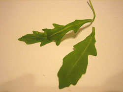
R�cula o Ar�gula (foto Mar�a Jos� Navarro). |
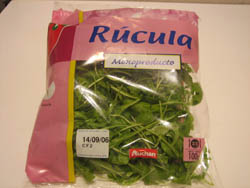
R�cula o Ar�gula envasada (Foto Mar�a Jos� Navarro) |
Todos
los germinados contienen grasas en abundancia, una relaci�n Ca:P muy
negativa, escasa cantidad de vitaminas y minerales, y algunos grandes
cantidades de prote�nas, por lo que no son recomendables. Sin embargo,
los germinados de r�bano y de soja o soya contienen unas de las m�s
altas cantidades de Vitamina B3 (Niacina) en el reino vegetal, por lo
que su consumo ocasional ayuda a evitar la Pelagra (enfermedad
carencial de piel y tejido nervioso).
|
|
COMPOSICI�N |
VITAMINAS |
MINERALES |
|
Germinado
De
Alfalfa
Medicago sativa
(100 g) |
Calor�as 29
Agua 92.8g
Ceniza 0.4g
Grasa 0.7g
Carbohidratos totales 2.1g
Fibra 1.9g
Az�cares 0.2g
Prote�nas 4g
Relaci�n Ca:P 0.45:1 |
Vitamina A 155UI
Vitamina C 8.2mg
Vitamina E 0.0mg
Tiamina (B 1) 0.1mg
Riboflavina (B 2) 0.1mg
Niacina 0.5mg
Piridoxina (B 6) 0.0mg
Folatos 36mcg
�c. Pantot�nico (B5) 0.6mg
Vitamina K 30mcg |
Calcio 32mg
F�sforo 70mg
Hierro 1mg
Magnesio 27mg
Potasio 79mg
Sodio 6mg
Zinc 0.9mg
Cobre 0.2mg
Manganeso 0.2mg
Selenio 0.6mcg |
|
Germinado
De
R�bano
Raphanus sativus
(100 g) |
Calor�as 43
Agua 90.1g
Ceniza 0.5g
Grasa 2.5g
Carbohidratos totales 3.6g
Fibra n.d.
Almid�n n.d.
Az�cares n.d.
Prote�nas 3.8g
Relaci�n Ca:P 0.45 |
Vitamina A 391 UI
Vitamina C 28.9mg
Vitamina E n.d.
Tiamina (B 1) 0.1mg
Riboflavina (B 2) 0.1mg
Niacina 2.9mg
Piridoxina (B 6) 0.3mg
Folatos 95mcg
�c. Pantot�nico (B5) 0.7mg
Vitamina K n.d. |
Calcio 51mg
F�sforo 113mg
Hierro 0.9mg
Magnesio 44mg
Potasio 86mg
Sodio 6mg
Zinc 0.6mg
Cobre 0.1mg
Manganeso 0.3mg
Selenio 0.6mcg |
|
Germinado
De
Soja (soya)
Glycine max
(100
g) |
Calor�as 147
Agua 67.5g
Ceniza 1.7g
Grasa 6.8g
Carbohidratostotales11.1g
Fibra 4.2g
Almid�n n.d.
Az�cares n.d.
Prote�nas 13g
Relaci�n Ca:P 1:1
�c. Ox�lico 0.36g |
Vitamina A 180UI
Vitamina C 29mg
Vitamina E n.d.
Tiamina (B 1) 0.4mg
Riboflavina (B 2) 0.2mg
Niacina 1.7mg
Piridoxina (B 6) 0.1mg
Folatos 165mcg
�c.
Pantot�nico
(B5) 0.1mg
Vitamina K n.d. |
Calcio 197mg
F�sforo 194mg
Hierro 3.6mg
Magnesio 65mg
Potasio 620mg
Sodio 15mg
Zinc 1mg
Cobre 0.1mg
Manganeso 0.5mg
Selenio 1.5mcg |
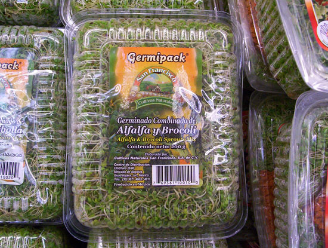
Germinado de Alfalfa y Br�coli.
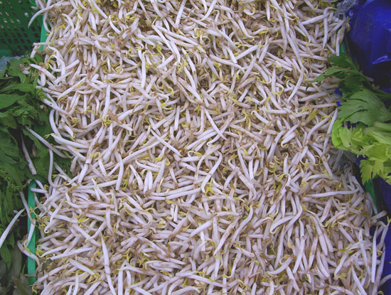
Germinado de soja o soya.
Alimentos que se deben evitar:
Las
espinacas (Spinacia oleracea L.), las acelgas (Beta
vulgaris var. cicla) y las verdolagas (Portulaca
oleracea L) contienen
grandes cantidades de �cido ox�lico, un antinutriente que evita la
utilizaci�n del calcio contenido en el alimento, adem�s de depositarse
en las arterias y en los capilares renales, y favorecer la formaci�n
de c�lculos en las v�as urinarias. El ruibarbo tiene cantidades tan
altas que puede causar una intoxicaci�n fatal.
A�n
cuando algunos autores mencionan que varias especies de tortugas como
Geochelone pardalis o Testudo graeca consumen alimentos con
gran contenido de �cido ox�lico en su medio natural sin mostrar al
parecer un efecto t�xico, las cantidades ingeridas son escasas o no se
mencionan. Otros autores han
sugerido que la muerte temprana por descalcificaci�n encontrada en las
hembras en libertad de Gopherus berlandieri podr�a deberse un
exceso en el consumo de este antinutriente en las tunas o higos
chumbos y en los nopales o palas de chumbera tan consumidos por esta
especie (Hellegreen et all. 2000). Existe al menos un caso documentado
de muerte por fallo renal debido a oxalosis en un macho adulto
silvestre de Gopherus agassizii (Jacobson, 2005). Tambi�n es
conocido el efecto t�xico del alto consumo de oxalatos en rumiantes
que poseen un proceso digestivo a base de fermentaci�n bacteriana
similar al de las tortugas. En tanto no se tenga conocimiento de la
cantidad de oxalatos que deja de ser segura y pasa a ser t�xica, ser�a
conveniente proporcionar dietas con bajo contenido de oxalatos. Es
casi imposible proporcionar una dieta libre de oxalatos pues se
encuentran pr�cticamente en todas las plantas, pero hay que estar
atentos a la cantidad que cada especie vegetal contiene.
|
Espinacas
Spinacia oleracea
Hojas
(100 g) |
Calor�as 23
Agua 91.4g
Ceniza 1.7g
Grasa 0.4g
Carbohidratos totales 3.6g
Fibra 2.2g
Almid�n n.d.
Az�cares 0.4g
Prote�nas 2.9g
Relaci�n Ca:P 2:1
Ac. Ox�lico 0.97g |
Vitamina A 9376UI
Vitamina C 28.1mg
Vitamina E 2.0mg
Tiamina (B 1) 0.1mg
Riboflavina (B 2) 0.2mg
Niacina 0.7mg
Piridoxina (B 6) 0.2mg
Folatos 194mcg
�c. Pantot�nico (B5) 0.1mg
Vitamina K 483mcg |
Calcio 99mg
F�sforo 49mg
Hierro 2.7mg
Magnesio 79mg
Potasio 588mg
Sodio 79mg
Zinc 0.5mg
Cobre 0.1mg
Manganeso 0.9mg
Yoduro 12mcg
Selenio 1mcg
Nitratos 166mg |
|
Acelgas
Beta vulgaris
var. cicla
Hojas
(100 g) |
Calor�as 19
Agua 92.6g
Ceniza 1.6g
Grasa 0.2g
Carbohidratos totales 3.7g
Fibra 1.6g
Az�cares 1.1g
Prote�nas 1.8g
Relaci�n Ca:P 1.1:1
�c. Ox�lico 0.65g |
Vitamina A 6116UI
Vitamina C 30mg
Vitamina E 1.9mg
Tiamina (B 1) 0.0mg
Riboflavina (B 2) 0.1mg
Niacina 0.4mg
Piridoxina (B 6) 0.1mg
Folatos 14mcg
�c. Pantot�nico (B5) 0.2
Vitamina K 830mcg |
Calcio 51mg
F�sforo 46mg
Hierro 1.8mg
Magnesio 81mg
Potasio 379mg
Sodio 213mg
Zinc 0.4mg
Cobre 0.2mg
Manganeso 0.4mg
Selenio 0.9mcg |
|
Verdolagas
Portulaca oleracea
Hojas
(100 g) |
Calor�as 16
Agua 93.9g
Ceniza 1.3g
Grasa 0.1g
Carbohidratos totales 3.4g
Fibra n.d.
Almid�n n.d.
Az�cares n.d.
Prote�nas 1.3g
Relaci�n Ca:P 1.5:1
Ac. Ox�lico 1.31g |
Vitamina A 1320UI
Vitamina C 21mg
Vitamina E n.d.
Tiamina (B 1) 0.0mg
Riboflavina (B 2) 0.1mg
Niacina 0.5mg
Piridoxina (B 6)
0.1mg
Folatos 12mcg
�c. Pantot�nico (B5) 0.0mg
Vitamina K n.d. |
Calcio 65mg
F�sforo 44mg
Hierro 2mg
Magnesio 68mg
Potasio 494mg
Sodio 45mg
Zinc 0.2mg
Cobre 0.1mg
Manganeso 0.3mg
Selenio 0.9mcg
Nitratos 615mg |
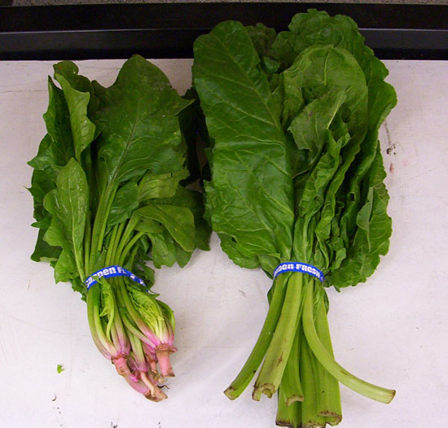
Espinacas (izquierda) y Acelgas (derecha). Para distinguirlas, adem�s
de ver el tama�o y forma de la hoja, las Espinacas suelen venderse con
el inicio de la ra�z. Las acelgas no, ya que su ra�z es una de las
variedades de betabel o remolacha.
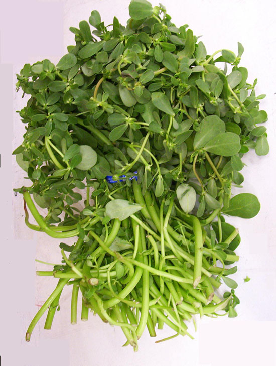
Verdolagas, un alimento poco adecuado.
Consideraciones finales:
No
existe por el momento un alimento �nico natural o procesado que pos s�
mismo cumpla todos los requerimientos nutricionales conocidos de las
tortugas terrestres. Por lo tanto es indispensable que les
proporcionemos la variedad m�s amplia posible de alimentos, con el
objeto de evitar enfermedades tanto carenciales como por acumulaci�n.
El
conocimiento de las necesidades nutricionales de las tortugas no es un
tema cerrado, sino que surgen nuevos descubrimientos d�a a d�a, por lo
que es indispensable mantener actualizados nuestros conocimientos de
la biolog�a y los requerimientos de estos magn�ficos animales con el
fin de proporcionarles los mejores cuidados posibles.
Bibliograf�a:
Avanzi,
M. y Millefanti, M. (2004) El Gran Libro de las Tortugas.
Editorial De Vecchi. Barcelona.
Bonasia A., Elia A., Gonnella M., Santamaria, P. ( 2001).
Ways of reducing rocket salad nitrate content Acta Horticolturae (ISHs)
, 548, 529-537.
De
Martin, S. y Restani, P. (2003) Determination of nitrates by a novel
ion chromatographic method: occurrence in leafy vegetables (organic
and conventional) and exposure assessment for Italian consumers.
Food additives and contaminants,
20(9), 787-792.
Hellgreen, E., Kazmaier, R., Ruthven, D. y Synatzske, D. (2000).
Variation in tortoise life history: Demography of Gopherus berlandieri.
Ecology. 81(5): 1297�1310.
Hern�ndez, M. (1995) Glucosinolatos de la dieta, un posible factor
causal de neuropat�as con modificaciones del transporte axonal.
Revista Cubana de Alimentaci�n y Nutrici�n 9(1): 48-51
Highfield, A.C. (2000).
The
Tortoise and Turtle Feeding Manual.
Caparace Press, London.
Highfield, A.C. (1996). Practical Encyclopedia of Keeping and
Breeding Tortoises and Freshwater Turtles.
Caparace Press. London.
Jacobson, E., Stacy, B., Berry, K., Huzella, L., Kalasinsky, V.,
Fleetwood, M. y Mense, M. (2005)
Oxalosis in Wild Desert Tortoises.
30Th Annual Meeting and Symposium. The Desert Tortoise Council.
Tucson, Arizona. Feb. 18-21, 2005. [Presentation with Abstract]
Keck, A. and Finley, J. (2004) Cruciferous Vegetables: Cancer
Protective Mechanisms of Glucosinolate Hydrolysis Products and
Selenium. Integrative Cancer Therapies.
3(1): 5-12
Mcconn, M.M., y Nakata, P.A. (2004). Oxalate reduces calcium
availability in the pads of the prickly pear cactus through formation
of calcium oxalate crystals.
Journal of Agricultural and Food Chemistry. 52(5): 1371-1374.
Ministry of Agriculture, Fisheries and Food (1996). UK. Nitrate in
Vegetables.
Food
Surveillance Information Sheet No. 91.
Nefzaoui, A. y Ben Salem, H.
(2001).
Opuntia spp.: a strategic fodder and efficient tool to combat
desertification in the WANA region. En: Mondragon, C. y Gonzalez, S.
(eds.).
Cactus (Opuntia spp.) as forage.
FAO Plant Production and Protection Paper, 169. pp. 73-90.
Ramos, G., Frutos, P., Gir�ldez, F.J. y Mantec�n, A.R. (1998) Los
compuestos secundarios de las plantas en la nutrici�n de los
herb�voros. Archivos de zootecnia
47(180),
597-620.
Rubio,
G. (2006) Tortugas Terrestres en Cautividad. 265 Cuestiones sobre
Mantenimiento y Enfermedades. Editorial Egartorre, S.L. Madrid.
Souci,
S. W.; Fachmann, W.; Kraut, H. (2000).
Food Composition and Nutrition Tables. 6th revised and completed
edition.
Medpharm Scientific Publishers. Germany.
U.S. Department of Agriculture, Agricultural Research Service. 2006.
USDA National Nutrient Database for Standard Reference, Release
19. Nutrient Data Laboratory.
|